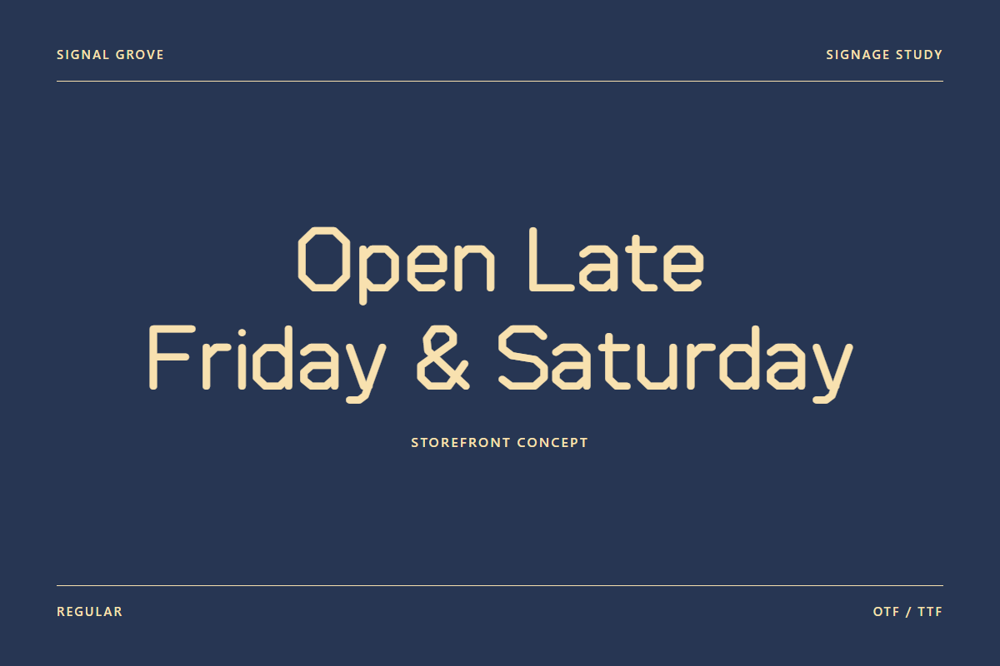
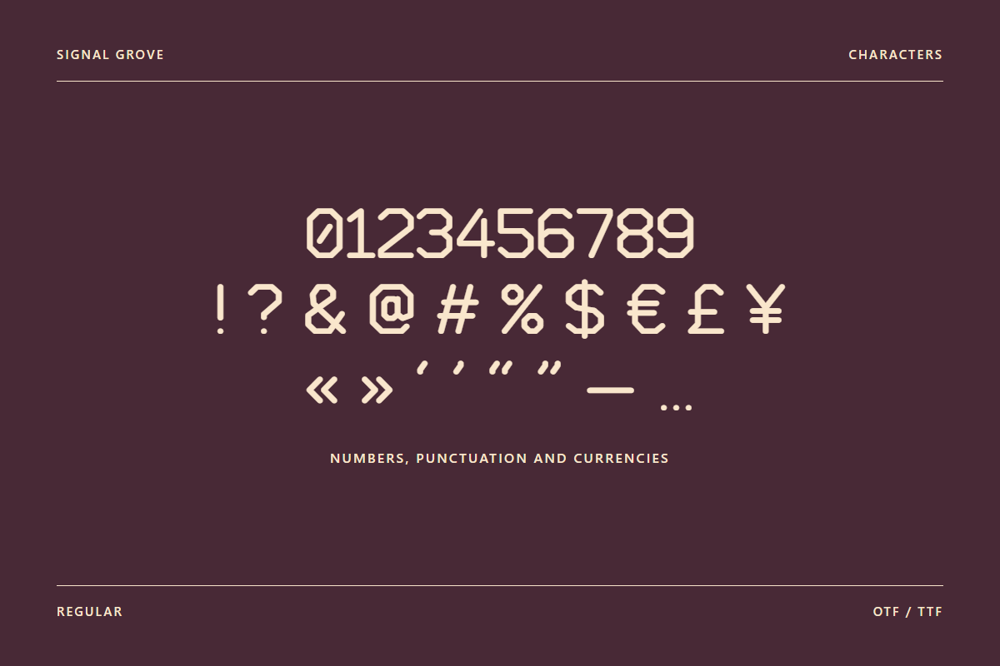
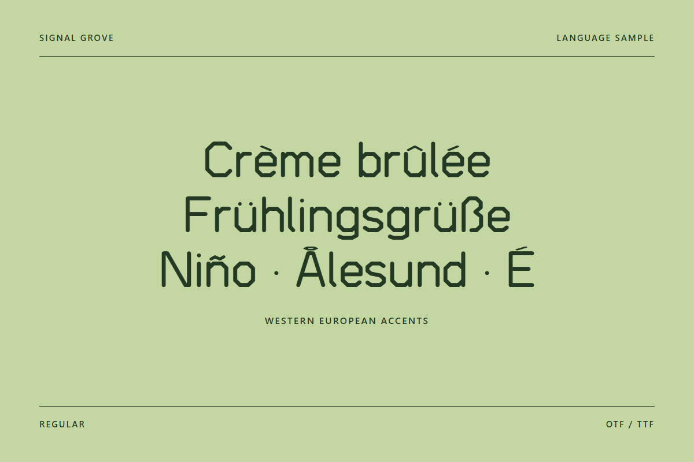

Display typefaceRegular
A geometric display face with cut corners and rounded ends, designed for short headlines, storefronts and packaging.
View specimensSignal Grove in use
Packaging and signage concepts, followed by the alphabet, figures and alternate forms.







About Kilevoy
Kilevoy is a type design portfolio focused on display lettering for packaging and signage. Signal Grove is the first prototype, developed with AI assistance. The glyphs were built from editable stroke drawings. Repeated angles tie the letters together, and rounded terminals soften the ends of the strokes.
The Regular covers basic Latin, Western European accents, numerals, punctuation, four currency symbols and six alternates.
Creative Fabrica account ID ends in 27.